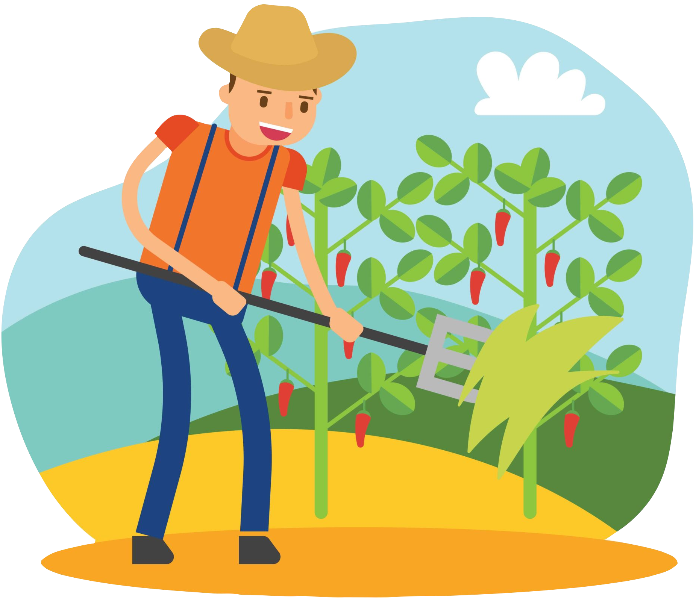

 This tool utilizes a complicated machine learning model trained using real-life agricultural data to help you decide what crop to plant based on the nutrients in your land's soil, its ph, temperature, humidity, and rainfall.